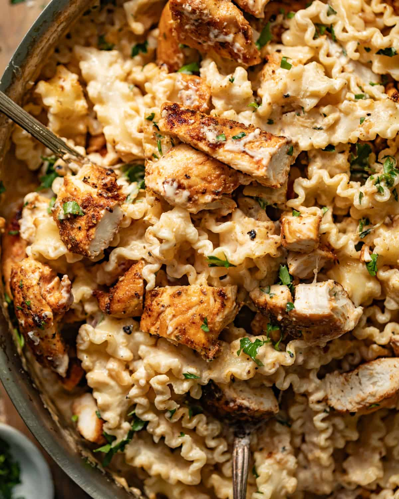
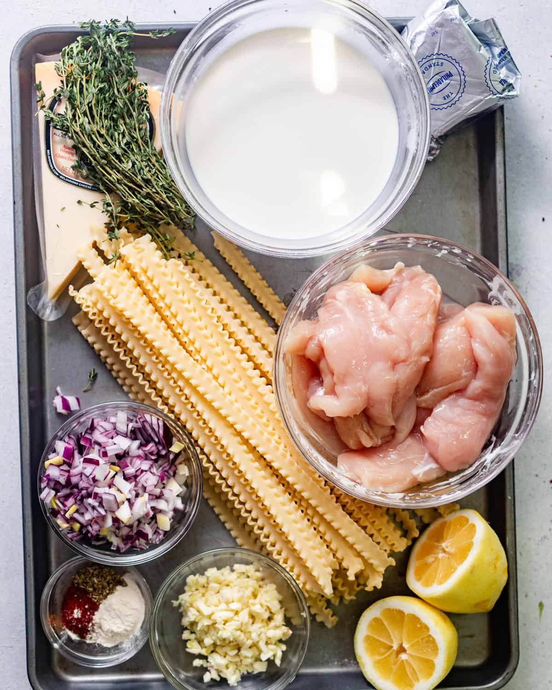
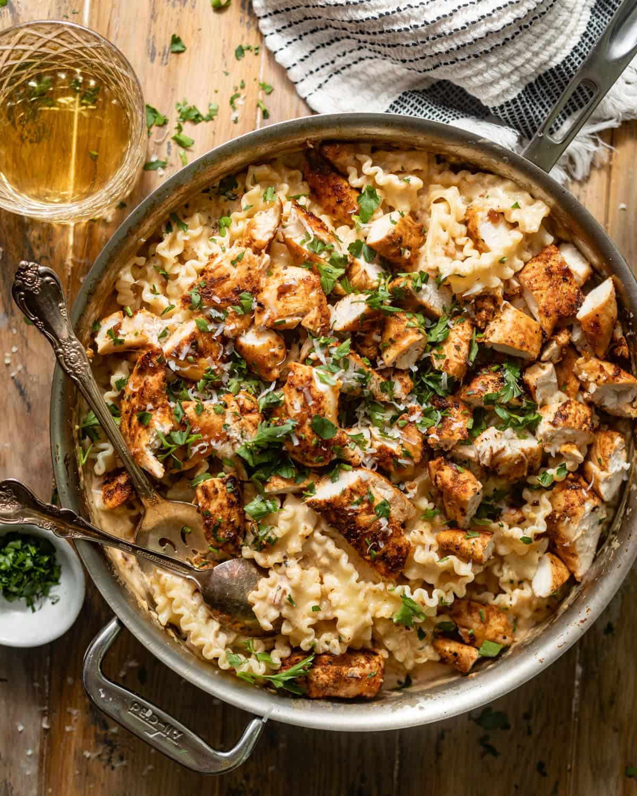

A little comfort, homemade
Garlic Parmesan Pasta with Chicken
A creamy and cheesy pasta dish featuring seasoned chicken, fresh garlic, parmesan cheese, and a rich cream sauce. This comforting pasta dinner comes together in about one hour and serves eight people.
Recipe by Britney Breaks Bread
Prep15 min
Cook45 min
Total1 hour
Serves8
Ingredients
For 8 servings. Check off ingredients as you go.
Chicken
Garlic Parmesan Sauce
Equipment Needed
- Large skillet
- Large pot
- Cutting board
- Knife
- Measuring cups and spoons
- Wooden spoon or spatula
- Colander
Instructions
-
Season the chicken
Pat the chicken dry. Season it with smoked paprika, oregano, garlic powder, onion powder, kosher salt, and black pepper.
-
Cook and rest
Heat the olive oil in a large skillet over medium heat. Cook the chicken for approximately 5-7 minutes on each side. Remove the chicken from the pan, cover it, and allow it to rest.
-
Soften the aromatics
Add butter to the same skillet. Add the shallots and cook until softened. Add the garlic and continue cooking for another 2-3 minutes.
-
Build the sauce
Add thyme and white wine to the skillet. Allow the wine to cook for about 5 minutes. Stir in the flour and chicken bouillon paste.
-
Stir until smooth
Add the heavy cream and cream cheese. Stir until the cream cheese has melted and the mixture becomes smooth.
-
Add the finishing flavors
Cook the sauce over low heat until it begins to thicken. Add parmesan cheese, lemon juice, hot sauce, and parsley. Season with salt and pepper as needed.
-
Cook the pasta
Cook the pasta in a large pot of salted water according to the package directions until al dente. Before draining, reserve approximately one cup of pasta water.
-
Adjust the consistency
If the sauce is too thick, add a small amount of the reserved pasta water until it reaches the desired consistency.
-
Toss and serve
Cut the cooked chicken into bite-sized pieces and return it to the sauce along with its juices. Add the cooked pasta, toss everything together, and serve.
Serving and Storage
Serving: Serve the garlic parmesan pasta hot immediately after combining the pasta, chicken, and sauce.
Storage: Store leftovers in an airtight container in the refrigerator for up to 3 days.
Reheating: Reheat leftovers on the stovetop over low heat, adding a splash of milk or broth if needed to loosen the sauce. You can also microwave the pasta in short intervals, stirring between each interval until heated through.
Freezing: Allow the pasta to cool completely before transferring it to an airtight container and freezing. The texture of the sauce may change slightly after freezing and reheating.